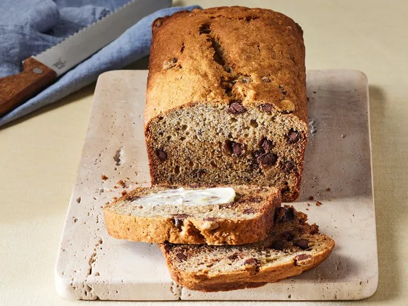

Home
Chocolate Chip Banana Bread

A deliciously moist banana bread with melty chocolate chips
Chocolate chip banana bread is a delicious twist on the classic banana bread, combining the rich sweetness of overripe bananas with the indulgence of gooey chocolate chips. The moist, tender loaf has a perfect balance of flavors, where the natural sweetness of the bananas enhances the slightly bitter, melty chocolate, making each bite irresistibly satisfying.
Baked to golden perfection, this treat offers a comforting texture with a soft crumb and slightly crisp edges. Whether enjoyed as a breakfast snack, dessert, or a cozy afternoon treat with a cup of coffee, chocolate chip banana bread brings a familiar yet exciting variation to a beloved favorite.
Ingredients
- 1/2 cup unsalted butter, (8 Tbsp), softened
- 2/3 cup granulated sugar
- 2 large eggs, room temperature
- 3 bananas, (very ripe)
- 1/2 tsp vanilla extract
- 1 1/2 cups all-purpose flour
- 1 tsp baking soda
- 1/2 tsp salt
- 1 cup semisweet chocolate chips
Steps
- Preheat Oven to 350˚F. Butter and flour a bread loaf pan
- In a mixing bowl using paddle attachment, cream together 1/2 cup softened butter and 2/3 cup sugar. Add 2 lightly beaten eggs
- Mash bananas with a fork until consistency of chunky applesauce and add them to the mixing bowl along with 1/2 tsp vanilla extract. Mix until blended
- In a separate bowl, whisk together dry ingredients: 1 1/2 cups flour, 1 tsp baking soda and 1/2 tsp salt. Add to mixing bowl and mix until incorporated
- Fold in 3/4 cup chocolate chips then transfer to prepared bread pan. Sprinkle remaining 1/4 cup chocolate over the top and bake at 350˚F for 55-65 minutes or until a toothpick inserted into the center comes out clean. Let banana bread rest 10 min before transferring to a wire rack to cool